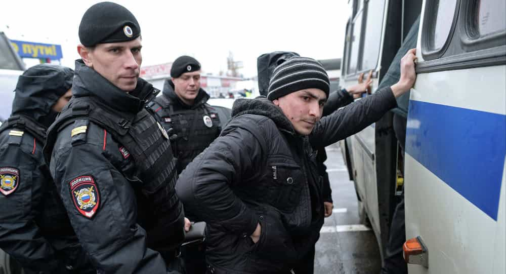
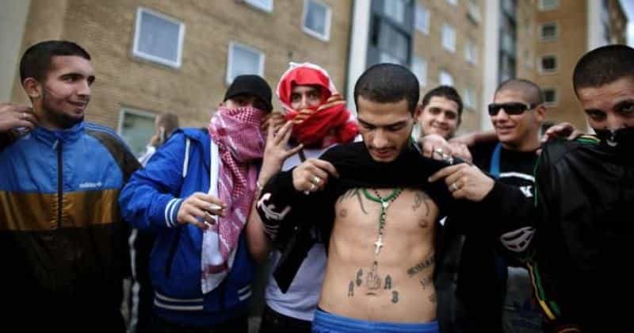
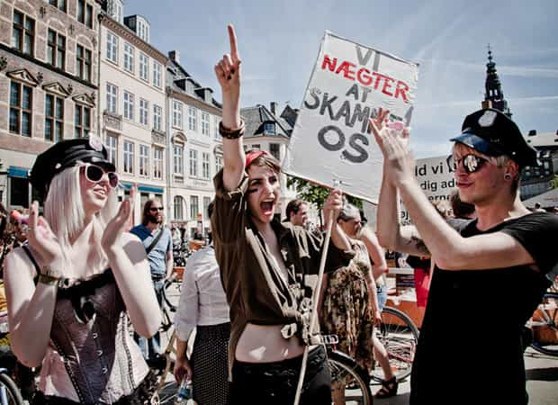
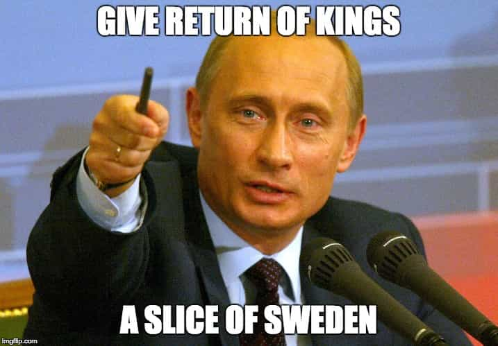

Sweden, concerned about a potential Russian invasion, has sent out war preparation pamphlets to nearly five million households. For most Swedes and certainly Swedish men, however, a Russian annexation would actually be a good thing.
Decades of cultural Marxism, destructive immigration, and criminal madness from minorities have reduced Sweden to a vassal state of globalists like George Soros. Ironically, the indigenous Swedish culture would be better protected and respected under Russian rule than it is by its present “Swedish” government. If civilian casualties during a Kremlin-ordered invasion could be minimized or avoided, what would Sweden have to lose?
Here are five reasons why Putin needs to consider invading Sweden and why Swedes should embrace any Russian incursion:
1. Sweden’s migrant crisis would be solved in record time
Absolute hordes of migrants, thousands of them pretending to be children, have passed into Sweden with impunity since 2015. Their numbers are in addition to those of routinely troublesome “established” immigrant communities coming to the country from the 1970s onwards.
This is how no-nonsense police in Moscow, amongst Russia’s most “cosmopolitan” and “tolerant” cities, firmly deal with the issue of illegal immigrants:

By contrast, here’s a police commander in Sweden having to speak to the press because officers dared go into a church to retrieve migrants residing there illicitly:
What causes a scandal in Sweden is done every half hour by police across the Russian Federation.
2. The streets of crime-ridden, demoralized Swedish cities would be much, much safer

The police can’t–or won’t–touch these people effectively in charge of Sweden’s streets nowadays.
This is heavily related to both the migrant crisis and Sweden’s appalling preference for radical feminism. Do you really wonder why residents are calling many Swedish neighborhoods massively unsafe and Third World-like when (female) police responses resemble this?
By letting economic migrants masquerading as legitimate refugees run amok, tolerating first and second-generation immigrants who spit on Swedish customs, and enforcing braindead gender quotas in the police and military, Sweden’s politicians and feminist/SJW apparatchiks are ensuring decades of crime and social instability.
Would Putin–or any future Russian leader–put up with riffraff like this? No and no.
3. The false rape hysteria of Sweden would be ended

Sweden has long been a hotbed of fake rape drama. The socialist government is now looking to expand the definition of rape under the absurd euphemism of “yes means yes.” Swedish men increasingly need notarized consent forms, lest some jaded female lover accuse them of impropriety and land them in jail.
The proposed widening of “rape” will involve feminists skulking about, further encouraging pumped-and-dumped women and other vengeful souls to reinterpret a consensual sexual dalliance as unmitigated “sexual abuse.” Probably the only thing that can save Swedish men is the serious threat of Russian invasion (beyond current concerns) or an actual invasion.
4. Swedish feminists would generally just shut up—or be made to shut up
Sweden needs its feminists to pipe down as their dumbassery knows no bounds. Swedish men, similar to men across the Western world, are much more likely to endure true suffering (think, say, homelessness), yet hapless feminist social engineers in Sweden have been busy at work, creating services like a “mansplaining hotline.” If a male colleague doesn’t agree with your stupid idea at work, why not call this number and denounce him to the authorities to alleviate your trauma?
I could go on and on, but a Russian invasion would stall and then reverse this journey into insanity. For example, in winter the new Russian overloads would make sure Stockholm and other cities had efficient snow removal programs, as opposed to the chaos feminist-inspired municipal politicians created a year ago. All in all, feminists would be rightfully viewed as morons whose only contributions to public debate might be demonstrating what farcical viewpoints used to exist in Sweden prior to Moscow taking charge.
5. Sweden’s neighbors and allies would grow the hell up

Responsibility-free Danish participants at a SlutWalk circle jerk.
Would Norway, Denmark, and Finland (or France, England, and Germany) be really concerned about such trivialities as mansplaining and manspreading if Russia invaded Sweden? I think not. The taking of Stockholm would finally force European states to extract loyalty from all their residents for the first time in decades. No more minorities sucking on the teat of economic largesse whilst simultaneously burning their host country’s flag.
Hilariously, in order to prepare for any suspected Russian aggression against them, cucked Western states would have to become more like Russia–politically incorrect, masculine-dominated, and culturally proud. Who would have thought?
Please attack Sweden, President Putin

Make Sweden Great Again, Mr. Putin. Invade Sweden.
Read More: Police Captain In Sweden Sympathizes With Migrant Who Killed Swedish Asylum Worker